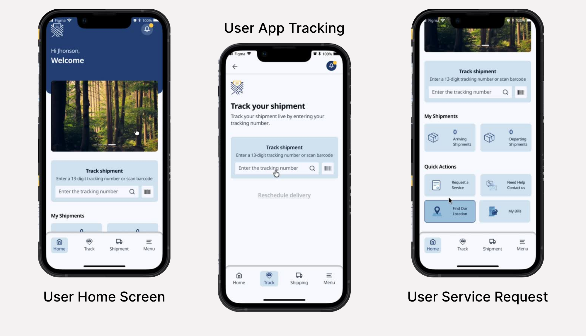
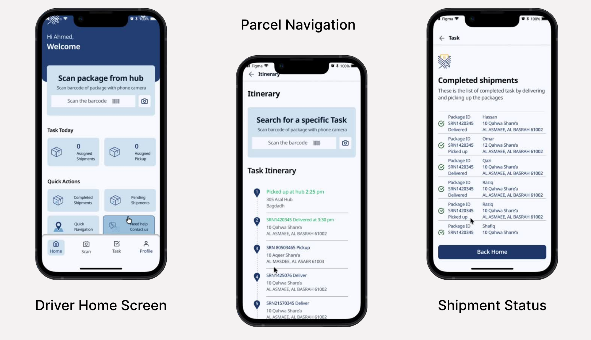

Tasheel Post: two apps, one parcel status everyone can trust
I designed Tasheel Post end to end: a customer app and a driver app that share one status, so senders always know where a parcel is and drivers always know what to do next.
UX/UI Designer, end to end
User / Organization app + Driver app
Senders, organizations, drivers, postal hubs
Client project via Techford AI


Overview
A mobile-first parcel platform for senders, organizations and drivers.
- Users and organizations create and track deliveries, find nearby hubs, manage billing and contact support.
- Drivers receive and complete delivery tasks, pick up from hubs or users, capture proof of delivery and manage their routes.
The interface is bilingual, in Arabic and English, so the same app serves both audiences.
The problem
Parcel delivery broke down at the handoffs.
Senders couldn't see where a parcel was, and drivers had no single place to manage their day.
- Senders and organizations: no live visibility once a parcel left their hands; late or missing updates; tracking, hubs, billing and support in separate places.
- Drivers: pickups and drop-offs tracked manually, unclear routes, no standard proof that a pickup or delivery happened.
- Hubs: slow coordination with drivers and customers; status often out of sync.
Design goals
One set of goals for senders and another for drivers.
| Goal | Sender experience | Driver experience |
|---|---|---|
| Efficiency | Quick parcel requests and instant tracking | Clear daily task lists with route optimization |
| Transparency | Live parcel status and delivery updates | Status synchronized between hub, driver and recipient |
| Simplicity | Intuitive navigation and minimal inputs | Smooth scan-and-go task handling |
| Reliability | Accurate billing and delivery confirmations | Proof of delivery logged automatically with photo capture |
Process
I mapped the service before designing a single screen.
Users & insights
Three audiences, one shared need: trust in the parcel's status.
- Individual senders: casual users who need a quick, reliable parcel service.
- Organizations: businesses with frequent deliveries who need bulk tracking.
- Registered drivers: authorized field agents managing daily pickups and drop-offs.
| Theme | Insight | Design direction |
|---|---|---|
| Transparency | Users want clearer status visibility | Live tracking and delivery proof |
| Efficiency | Drivers need structured daily workflows | One task and navigation dashboard |
| Communication | Hubs need faster coordination | Direct hub contact and synced updates |
| Trust | Limited visibility reduces reliability | Automatic cross-app updates and photo proof |
Challenges
The hard part wasn't screens. It was keeping two very different apps telling the same story.
Two apps, two mindsets
Challenge Senders browse calmly; drivers work fast, outdoors, one-handed.
Solution Every driver action (scan, pickup photo, delivery photo) maps to a status the sender sees. Same system, different density.
Status users can trust
Challenge Delayed or missing updates were the core trust problem.
Solution Status changes come from real actions, not manual typing. Photo proof is logged automatically and shown to the sender.
Drivers in the field
Challenge Glare, gloves, time pressure, interruptions.
Solution Scan-and-go flow, large tap targets, Scan as a main tab, haptic confirmation and an emergency action.
A focused driver day
Challenge Too much data slows drivers down.
Solution The dashboard shows today's tasks only, and history covers the last two days.
One app, two kinds of sender
Challenge An individual sends one parcel; an organization tracks many.
Solution Shared navigation (Home, Track, Hubs, History, Profile) with history and billing that scale.
Service flow
One parcel, six stages, every stage visible to the sender.
The two apps
Customer app: create, track and pay with minimal input.
| Tab | What it does | Decision |
|---|---|---|
| Home | Shortcuts and active shipments | New request is one tap away |
| Track | Live parcel status | Status plus photo proof builds trust |
| Hubs | Find and contact nearby hubs | Answers "where do I drop this?" |
| History | Past shipments | Scales for organizations |
| Profile | Account, billing, support | Billing and support in one place |
Driver app: finish every task with as little typing as possible.
| Tab | What it does | Decision |
|---|---|---|
| Dashboard | Today's pickups and deliveries | Only today, nothing extra |
| Tasks | Task details and status | Clear next action per task |
| Scan | Scan at hub, pickup, delivery | A main tab, not buried in a task |
| Navigation | Route to the next stop | No app switching mid-task |
| Profile | Account, vehicle selection | Vehicle chosen at shift start |
Design system
One system powers both apps, so a status looks and behaves the same everywhere.
| Element | Choice | Why |
|---|---|---|
| Colour | Blue primary, yellow accent, semantic status colours | Blue for trust; status reads at a glance |
| Type | Noto Sans Arabic, per client brand guidelines | Clear, consistent reading in both Arabic and English, legible at small sizes in the field |
| Icons | Outline set, consistent weight | Fast recognition for scan, pickup, deliver |
| Cards | Rounded, soft shadow, status colour | Parcel, task and status in one unit |
| Navigation | Bottom bar, 5 tabs per app | Thumb reach, low cognitive load |
| Interaction | Scan confirmations, status animations, haptics | Drivers know an action worked |
Outcome
A fragmented process became one connected service.
- Parcel creation and live tracking simplified for senders.
- Today's tasks, route and scan in one driver app.
- Trust built through live status and photo proof of delivery.
- Better coordination between hubs, senders and drivers through synced status updates.
What I'd measure: request completion rate, time to complete a delivery task, fewer "where is my parcel" support contacts, and proof-of-delivery capture rate.
What I learned: design the ecosystem, not the app. Mapping the service first gave every screen a reason to exist. Next time I'd test the driver flow on the road earlier and design failed-delivery and offline states up front.
Next case study
Designsmith Employee App →